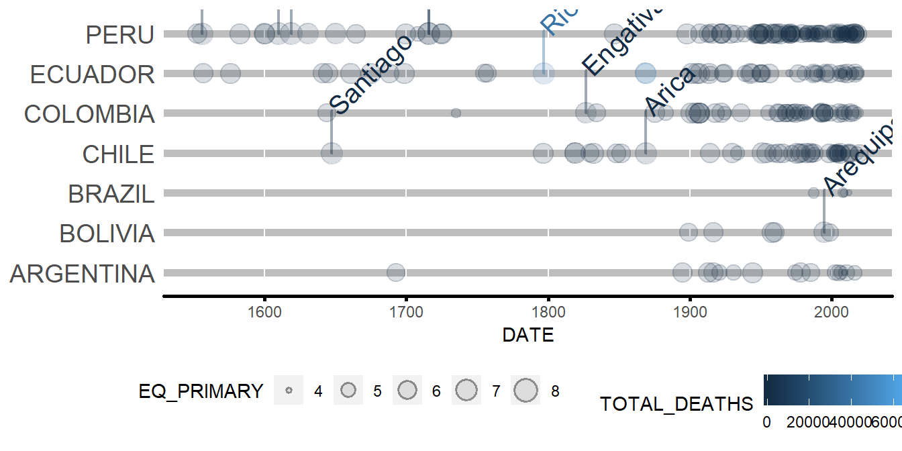

Chapter 6 GeomTimelineLabel
This geom_* performs the labels annotation on the geom_timeline plots.
6.1 Example
Using ggplot2::layer to plot the visuals of GeomTimelineLabel.
# Path to the raw data.
raw_data_path <- system.file("extdata", "signif.txt", package = "msdr")
# Loading the dataset of Earthquake.
df <- readr::read_delim(file = raw_data_path,
delim = '\t',
col_names = TRUE,
progress = FALSE,
col_types = readr::cols())
# Cleaning and Creating LOCATION column.
df_clean <- df %>% eq_clean_data() %>% filter(COUNTRY %in% c('CHILE', 'COLOMBIA','ECUADOR',
'PERU', 'PARAGUAY','URUGUAY',
'BRAZIL', 'BOLIVIA', 'ARGENTINA'))
# Creating a simple geom_timeline plot.
simple_plot <- df_clean %>%
ggplot2::ggplot() +
msdr::geom_timeline(aes(x = DATE,
y = COUNTRY,
size = EQ_PRIMARY,
color = TOTAL_DEATHS))
# Adding the labels annotation using ggplot2::layer
simple_plot +
ggplot2::layer(geom = GeomTimelineLabel,
mapping = aes(x = DATE,
label = LOCATION,
y = COUNTRY,
mag = EQ_PRIMARY,
color = TOTAL_DEATHS,
n_max = 10),
data = df_clean,
stat = 'identity',
position = 'identity',
show.legend = NA,
inherit.aes = TRUE,
params = list(na.rm = FALSE)) + theme_msdr()